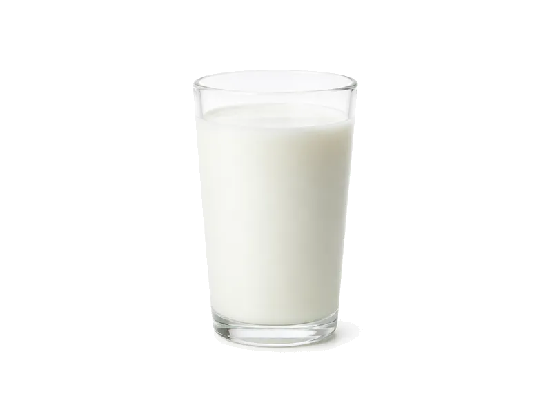

Nabiał i jaja
Mleko 2% tłuszczu - Mlekovita
Mleko 2% tłuszczu - Mlekovita: 3 g białka, 49 kcal, 4.7 g węglowodanów i 2 g tłuszczu na 100 g. Kategoria: Nabiał i jaja.
Kalorie49 kcalna 100 g
Białko / proteiny3 g
Węglowodany4.7 g
Tłuszcz2 g
Cena (szac.)~0,34 złza 100 g
Ceny zaktualizowano: sierpień 2026 (szacunek — ceny w popularnych supermarketach)
Porcja: porcja (150g)
| Kalorie | 74 kcal |
|---|---|
| Białko | 4.5 g |
| Węglowodany | 7.1 g |
| Tłuszcz | 3 g |
| Cena (szac.) | ~0,50 zł |
Szczegółowe składniki odżywcze na 100 g
| Wartość energetyczna (kalorie) | 49 kcal |
|---|---|
| Białko (proteiny) | 3 g |
| Węglowodany | 4.7 g |
| Tłuszcz | 2 g |
| Tłuszcze nasycone | 1.1 g |
| Tłuszcze nienasycone | 0.9 g |
| Witaminy i minerały (skrót) | Witamina B12, Witamina B2, Fosfor |
| Współczynnik kcal / 1 g białka | 16.3 |
| Cena produktu (szac. za 100 g) | ~0,34 zł |
| Cena za 100 g białka (szac.) | ~11,11 zł |
Witaminy i minerały na 100 g
Ilość w 100 g produktu oraz orientacyjny % dziennego zapotrzebowania (RDA) dla dorosłej osoby. Żelazo wg normy dla kobiet; sód jako % limitu. Wartości typowe (USDA / tabele żywieniowe / etykiety) — mogą się różnić między markami.
-
Witamina A 40 µg
-
Witamina D 1 µg
-
Witamina B1 (tiamina) 0.04 mg
-
Witamina B2 (ryboflawina) 0.18 mg
-
Witamina B3 (niacyna) 0.1 mg
-
Witamina B5 0.36 mg
-
Witamina B6 0.04 mg
-
Witamina B12 0.5 µg
-
Cholina 14 mg
-
Wapń 118 mg
-
Żelazo 0.03 mg
-
Magnez 11 mg
-
Fosfor 93 mg
-
Potas 150 mg
-
Cynk 0.4 mg
-
Selen 3 µg
-
Jod 15 µg
-
Sód 44 mg